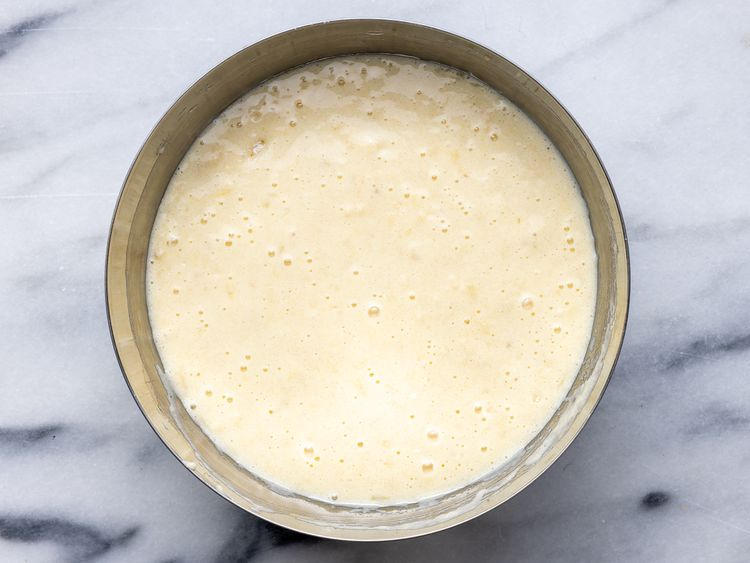
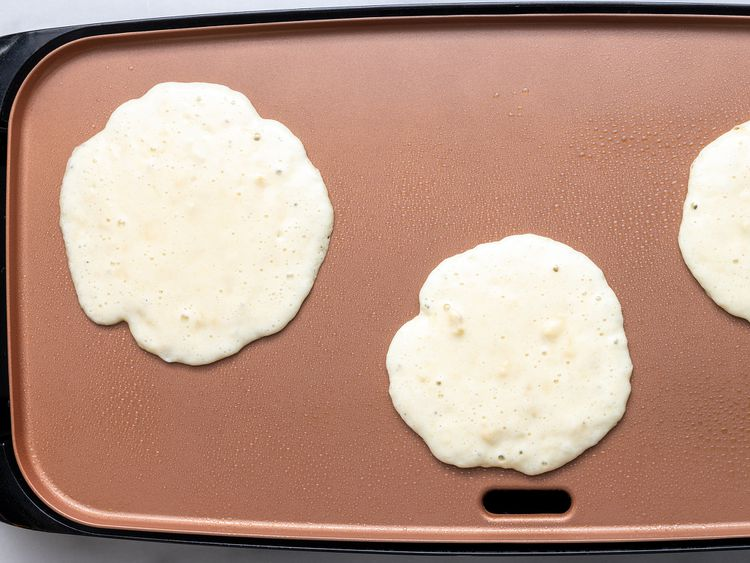
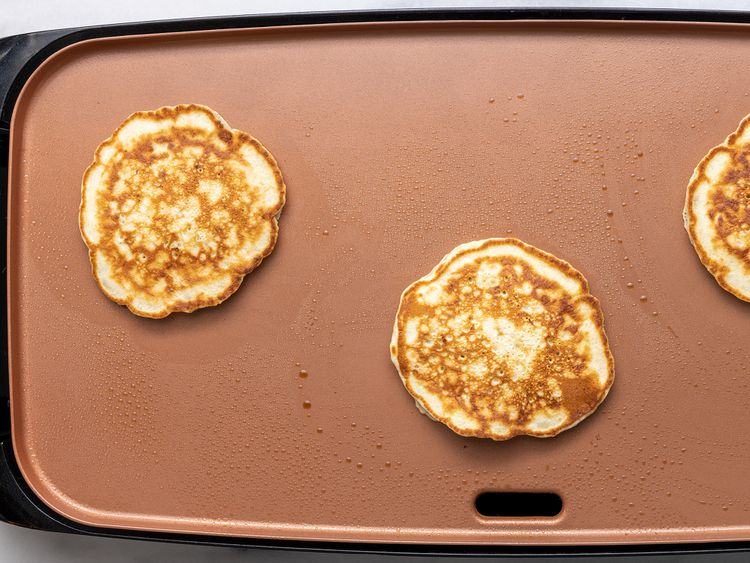

Fluffy banana pancakes made from scratch with mashed ripe bananas that are ready in minutes for a delicious twist on ordinary pancakes.
Combine your dry ingredients (flour, sugar, salt, baking powder) in one bowl and your wet ingredients (egg, milk, vegetable oil, mashed bananas) in another bowl. Add the dry ingredients to the bowl with the wet ingredients, then stir until they're incorporated. It's OK if your batter is slightly lumpy.
Heat a lightly oiled griddle or frying pan over medium high heat. Pour or scoop the batter onto the griddle, using approximately 1/4 cup for each pancake.
Cook until pancakes are golden brown, 3 to 5 minutes per side. Serve hot.
Serve your banana pancakes immediately. They're delicious alone or with your favorite pancake toppings.